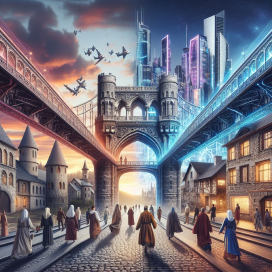

La musique lié

"The Time Machine" : La bande-son de notre télévision immersive
Plongez dans l'univers électronique avant-gardiste avec "The Time Machine", le morceau d'ouverture de l'album "Electronica 1: The Time Machine" de Jean-Michel Jarre. Sortie en 2015, elle offre une parfaite introduction sonore à notre concept de télévision immersive du futur.
Une collaboration visionnaire
Cette piste, fruit d'une collaboration entre Jarre et le producteur allemand Boys Noize, fusionne l'expertise du pionnier français de la musique électronique avec l'énergie de la scène contemporaine. Cette rencontre intergénérationnelle fait écho à notre vision d'une télévision qui transcende les limites actuelles pour créer une expérience totalement nouvelle.

Boys Noize
Un voyage sonore immersif
Dès les premières notes, "The Time Machine" nous plonge dans un univers futuriste. Les sons synthétiques et les rythmes hypnotiques créent une atmosphère enveloppante qui préfigure l'immersion totale promise par notre télévision du futur. L'auditeur se trouve transporté dans un espace sonore tridimensionnel, tout comme notre téléviseur transformera l'espace physique en environnement virtuel.

Image d'une musique futuriste
Le pont entre passé et futur
Tout comme notre concept de télévision immersive s'appuie sur les technologies existantes pour créer une expérience révolutionnaire, "The Time Machine" mêle habilement les sonorités classiques de Jarre à des éléments plus modernes apportés par Boys Noize. Ce mélange symbolise parfaitement la transition entre la télévision d'aujourd'hui et celle de demain.

Pont entre passé et futur
Une invitation au voyage
Les 3 minutes et 54 secondes de ce morceau invitent l'auditeur à un voyage temporel, tout comme notre télévision du futur permettra aux spectateurs de se transporter dans différents environnements. Les variations rythmiques et mélodiques du morceau évoquent les changements d'ambiance que pourrait offrir notre dispositif immersif.
Image des notes qui peuvent faire pensés à un univers futuriste